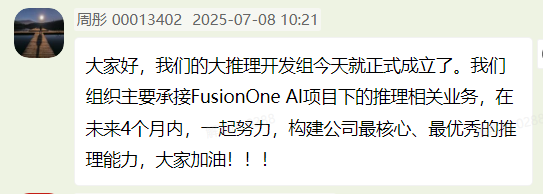
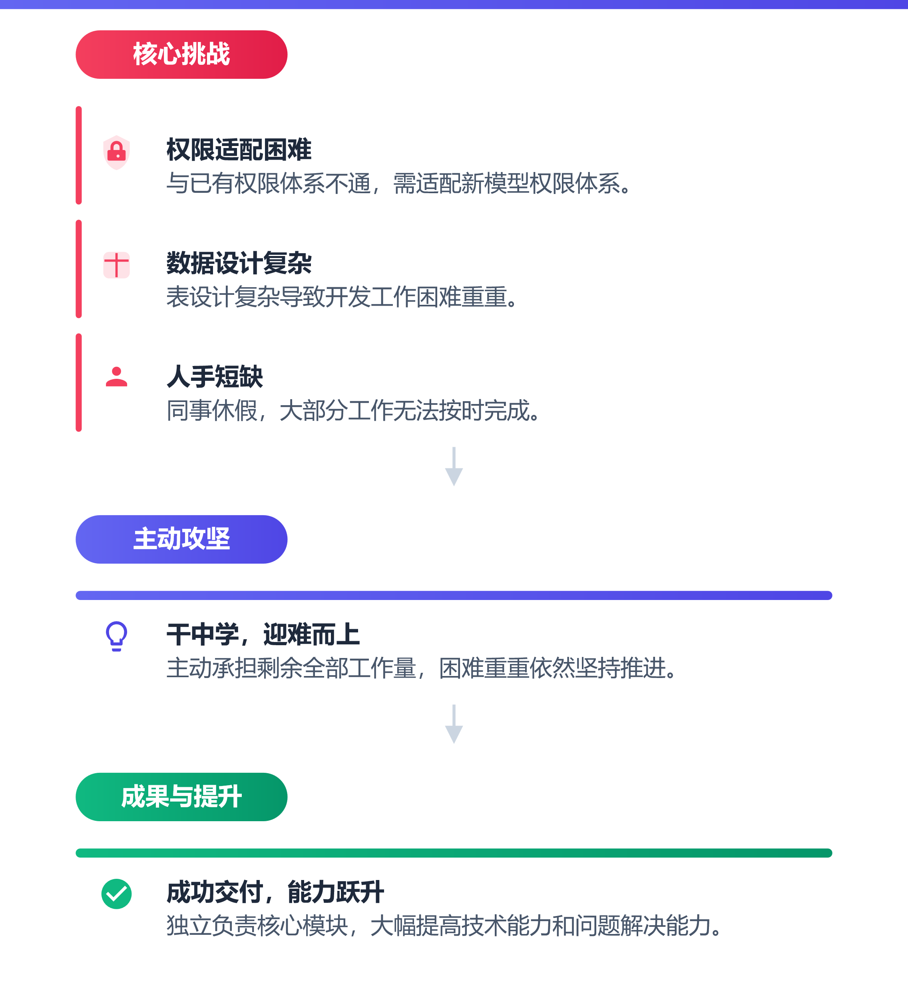
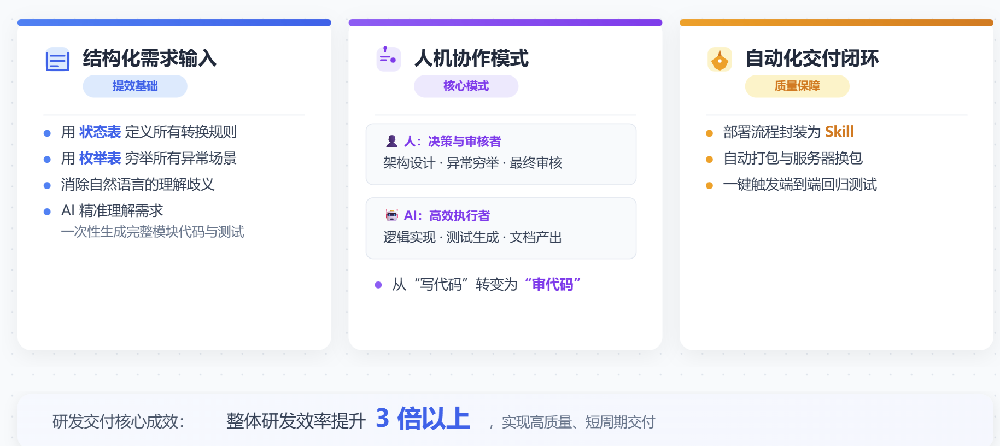

0+
累计贡献代码行数
Personal Growth Review / FOA Software Engineer / 2026
// 01. About & profile

FOA General Software Engineer
复旦大学计算机硕士，现就职于算力事业部 · 算力研发部 · 云智融合开发部，专注 MaaS 推理服务与平台能力建设。
累计贡献代码行数
超聚星项目奖励
AI Coding 综合提效
// 02. Selected growth cases
从入职第三周临危受命，到独立承担核心模块，再到用 AI Coding 重构复杂状态机——每一次跨出舒适区，都让个人能力转化为团队价值。
面对开发流程、技术栈、推理业务三重陌生环境，快速完成角色切换。730 首版本成功打通推理服务全流程，适配分布式推理、PD 分离、灰度发布与 KVCache 加速等核心能力。


为降低模型选型与使用门槛，独立推进模型广场核心模块。面对权限体系不通、表设计复杂与同事休假的叠加挑战，主动接住剩余工作量，持续调动资源、拆解问题并按期交付。


“动用一切资源去解决问题，不拿困难当停下来的理由。”
针对状态抖动、永久卡滞与语义模糊问题，引入 Snapshot + Reconciler 声明式状态管理范式，实现全生命周期状态收敛与异常自愈。


// 03. Methodology
不是把时间塞满，而是把精力对准最重要的问题。识别噪音、锁定目标、持续推进，让复杂任务在清晰的节奏中收敛。
// 04. Work & life mindset
任务棘手、时间紧迫，领导明确要求今天修好。
心跳加速、呼吸急促——情绪已经发生，评价仍可选择。
否定自我、限制思维广度，让压力继续消耗心理能量。
把注意力转向可控因素，拓展思维并调动已有资源。
合理归因，把压力转化为行动，然后快乐下班。
// 05. Core qualities
优秀职场新人的底层素养：用空杯心态学习，用主人翁意识担当，用清晰的方法持续创造价值。
敢于打破常规，用新思路解决老问题。在状态机重构中引入声明式管理范式，用 AI Coding 突破效率瓶颈。
快速响应，精准执行。把 4 人月的工作量压缩至 1 个月完成，并始终保持“一次做对”的工作习惯。
主动承担，不退缩、不推诿。面对资源变化主动接住剩余工作，在干中学，坚持把事情做完、做好。